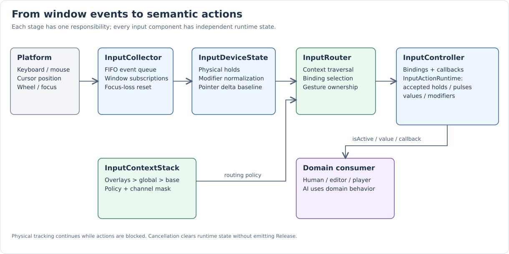

Input System
Nexium routes window events through a shared input system into named actions on ECS
components. Each binding defines its physical chord and its activation rule.
Gameplay reads isActive("Run"_atom) without needing to know whether Run means a
press, release, or held key.
Domain controllers decide what to do with actions. Context layers decide which controllers may receive them. The runtime remembers accepted presses, clears frame pulses, and cancels interrupted actions without manufacturing releases.
This section describes sources/NxWorld/Framework/Input/ and
sources/NxSubsystems/Input/. Legacy polling managers still exist; see
Integration for their remaining uses.
Reading guide
| Page | What it answers |
|---|---|
Chords, triggers, values, callbacks, and multiple bindings. |
|
Modal windows, text fields, global shortcuts, holds, and pointer ownership. |
|
BaseController, GameController, HumanController, AIController, and EditorController. |
|
Implementing, registering, initializing, and using a custom controller. |
|
Runtime order and editor, Player, and Spectator consumers. |
|
Saved configuration, runtime state, cloning, recording, and rebinding. |
|
Declarations, defaults, return values, and preconditions. |
|
Diagnosis and the executable tests that establish each contract. |
The complete path

-
Platform publishes keyboard, mouse-button, pointer-position, and wheel events.
-
InputCollectorqueues them. Focus loss invokes reset immediately. -
InputDeviceStateupdates physical state, normalizes chord keys, reconstructs modifiers, and calculates pointer deltas. -
InputRoutervisits context layers in priority order and resolves one binding per receiving component for each press, movement, or wheel event. -
Each
InputControllerhas an independentInputActionRuntime, containing accepted button bindings, persistent holds, and frame transients. -
Consumers poll
isActive()/getActionValue()or receive synchronous callbacks.
Physical state is updated even while capture or a blocking context suppresses actions. This lets the system observe real releases and clear held buttons correctly.
Responsibilities
| Type | Responsibility | Boundary |
|---|---|---|
|
Subscribe to one window, queue events, invoke focus-loss reset. |
No action resolution or context selection. |
|
Physical buttons, normalized chord snapshots, modifiers, pointer baseline. |
No binding configuration or callbacks. |
|
Editable configuration, minimum validation, most-specific chord resolution. |
No active state, Platform subscriptions, or ECS lifetime. |
|
Base, optional global, and temporary overlay layers. |
No callback dispatch or component ownership. |
|
Non-owning registrations, layer priority, blocked holds, pointer ownership. |
No movement or AI decisions. |
|
Accepted bindings, holds, frame pulses, modifiers, values. |
No Platform subscriptions or layer priority. |
|
Bindings, action queries, handlers, serialization, ECS registration. |
No actor possession or gameplay behavior. |
|
Coordinate collector, device state, contexts, router; expose the engine entry point. |
Does not own registered components or domain controllers. |
Domain controllers |
Translate input or AI decisions into behavior; GameController tracks an actor. |
Do not parse raw hardware events or duplicate context routing. |
|
Its own keyboard manager for the Delete shortcut inside component editors. |
GetInputSystem() returns the application singleton. The current system is not
partitioned into per-player/per-window instances. Processing and callbacks run
synchronously on the calling runtime thread.
First working example
This test gives Gameplay and Editor the same W binding. Switching the base context cancels the gameplay hold; only a fresh W press activates the editor action.
TEST_F(InputControllerTests, RoutesContextsAndReleasesHeldActions)
{
auto game = InputController::Create("Game"_atom, InputContext::Gameplay);
auto editor = InputController::Create("Editor"_atom, InputContext::Editor);
game->bind("Move"_atom, KeyChord::Exact(Key::W), InputActionTrigger::WhileHeld);
editor->bind("Move"_atom, KeyChord::Exact(Key::W), InputActionTrigger::WhileHeld);
key(Key::W, State::Pressed);
frame();
EXPECT_TRUE(game->isActive("Move"_atom));
EXPECT_FALSE(editor->isActive("Move"_atom));
frame();
EXPECT_TRUE(game->isActive("Move"_atom));
GetInputSystem().setActiveContext(InputContext::Editor);
EXPECT_FALSE(game->isActive("Move"_atom));
key(Key::W, State::Released);
key(Key::W, State::Pressed);
frame();
EXPECT_TRUE(editor->isActive("Move"_atom));
}The fixture initializes GetInputSystem() with Platform::GetWindow(), selects
Gameplay, and resets input around each test. key() publishes a window event;
frame() calls processEvents(). Production code uses Runtime’s existing loop.
For an actor-facing example reading isActive("Run"_atom), see
Creating custom controllers.
Core contracts
-
Trigger semantics belong to the binding.
isActive()is the boolean action query. -
Press/release pulses last until the next
processEvents()begins. -
WhileHeld persists only while its accepted chord remains valid.
-
Same-context controllers may receive the same input. Priority is between layers, not an exclusive winner between controllers within a layer.
-
ConsumeMatched stops lower layers on a match. BlockLower also stops unmatched input on its selected channels.
-
Cancellation clears runtime state silently; it never manufactures OnRelease.
-
A held button does not become a new press after a context switch. Held modifiers remain available with a fresh trigger key.
-
InputMap copies contain configuration only; runtime state remains independent.
-
Possession uses a weak actor reference and does not transfer actor ownership.
Implementation map
| Location | Contents |
|---|---|
|
Contexts, channels, buttons, chords, triggers, events, modifiers, recording capture. |
|
Controller hierarchy and routed input implementation. |
|
Frame ordering and integration hook. |
|
Viewport, text-input, modal, and global-shortcut policy. |
|
Editor/viewport action consumers. |
|
2D/3D camera maps and behavior. |
|
Movement polling from a descendant InputController. |
|
Runtime, binding, callback, capture, serialization, and modifier contracts. |
|
Context policies, cancellation, pointer ownership, routing mutation. |
|
Hierarchy, possession, child ownership, cloning, custom controller example. |